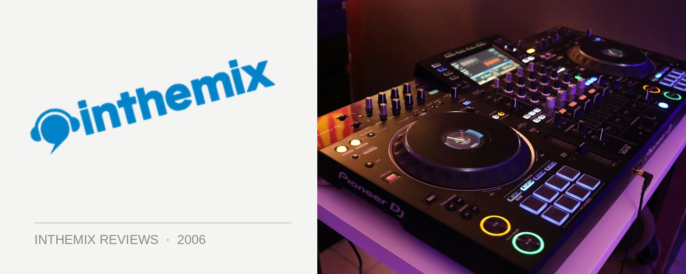

Various Artists - Kink Vol. 1, Mixed by Moguai & Ben Morris
(Ministry of Sound/EMI)
From the moment promoter Scott Robertson had the genius idea of turning the glamorous ArtHouse venue into a weekly dance music destination, wallah – a new Sydney clubbing brand was born. Famous for its quality house music, gorgeous women and constant stream of A-grade international guests, Kink has packed the ArtHouse out week in and week out and become one of the city’s premier house nights. Taking the brand a step further, Kink has unleashed the first in a series of mix CDs.
Ben Morris is one of Kink’s most loved local residents, and since joining the crew has 0propelled himself up the ranks to become one of Sydney’s best respected sources of quality house music. With his first Kink mix he delivers a tight mix of rockin’ electro house with all the big basslines, squelches and whistles we’ve come to expect from the sound. It’s a bangin’ selection that keeps it tough and dirty, and Morris deftly positions himself smack right in the middle of the electro house equation – steering clear of the cheese without ever becoming too glitchy.
While there are some massive tunes included from the likes of Mylo, Tiefschwartz, Dirty South and Tiga, the sounds grow heavier and techier as the mix progresses, meaning Kink regulars and chin scratchers alike will be satisfied with Morris’s CD. Whether you’re a fan of the current electro house craze or not, if you wade through all the mass produced material in circulation there is some really excellent stuff being produced and Ben Morris’s Kink CD series is great evidence of that.
On the other end of the scale, Moguai is one Kink’s most infamous international guests with many regulars remembering his 2005 set as among the club’s most memorable moments. Moguai is know for his killer breaks productions including U Know Why and Freaks, so it’s a little surprising that he delivers a set full synth-heavy electro and tech. For a night renowned for its upfront house sounds the mix from Moguai isn’t as rockin’ as you might expect, and in contrast to Morris’s CD it satisfies neither the Kink regulars nor the chin-scratching elite. Moguai throws down a series of tracks slotted together without any sequence or flow, showing he lacks what it takes to deliver a first-class mix CD. There is a fine line between engaging cleverness and soulless elevator music, and it’s one that he fails to tread successfully on his contribution to the Kink CD.
Kink recently celebrated its 3rd birthday with Danny Howells wowing the crowd, leaving little doubt it has become one of the big players in the Sydney clubbing scene. The Kink blend of upfront house and side-room party breaks isn’t for everyone, but there’s little doubt Scott is onto a winning formula and will continue to pack out the ArtHouse for years to come. While the Moguai CD disappoints, the quality of the mix from resident Ben Morris is more than enough of a reason for Kink regulars to rush out and pick up a copy. Here’s to another three years of high-class Sydney clubbing.